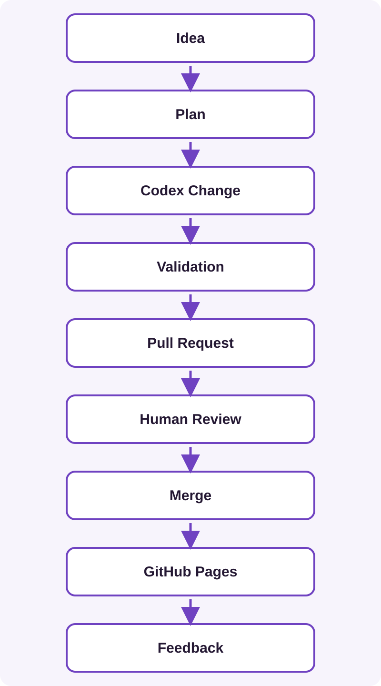

Learning Outcome
Move from conversational snippets to repository-aware work: connect an authorised codebase, analyse and plan first, use branches and commits, validate, review a pull request, merge, and understand how GitHub Pages deploys the approved result.
1Connect Codex to the Repository
Codex has fast-evolving surfaces. For a hosted GitHub workflow, sign in with the appropriate OpenAI account, authorise its GitHub connection when prompted, grant only needed repositories, and select the photography repository. Organisation policy may require administrator approval.
Confirm the account and repository before starting. Follow current official Codex cloud documentation for exact controls rather than relying on button positions here. Repository access can be changed or revoked through the connected GitHub application settings.
2Understand Repository-Aware AI
ChatGPT with supplied code sees snippets and conversation context. Codex with an authorised codebase can inspect related files, modify them and run commands in its working environment. Broader context helps with cross-file changes, but makes scope and review more important.
3Start with Analysis
Inspect this repository and explain its current structure.
Identify HTML pages, local assets and validation commands.
Do not modify any files.This reveals project instructions and lets you correct Codex’s understanding before edits.
4Plan Before Changing
Plan how to add a Technology link to every HTML navigation.
List expected files, validation and ambiguity.
Do not implement yet.Review the file list and checks; only then approve implementation.
5Prefer Small Changes
Bad: Refactor my entire website.
Better: Add a Technology link to every HTML navigation. Preserve link order and markup style. Change nothing else. Run link checks and show the diff.
A diff is the line-by-line view of a change. Focused diffs are easier to test and review.
6Use Branches and Commits
A branch is a separate line of work for a proposal without changing live main. A focused commit records it. Whether the Codex surface creates a task branch or you select one, verify its target before review.
7Review the Pull Request
A pull request asks to merge one branch into another and provides a governance checkpoint.
- Read the summary and changed-files list.
- Inspect every diff.
- Review automated checks.
- Comment or request changes.
- Approve and merge only when it matches the request.
8Validate for This Project
Validation depends on the repository; discover documented commands rather than assuming them.
git diff --check
git diff
git grep "old-page.html"
# run the project's HTML or link checker, if presentA project may add a link-audit script. Browser checks are still useful for layout and interaction.
9Put DevOps into Practice

Source control records changes; small changes limit risk; automation repeats checks; review applies judgement; continuous delivery keeps approved work ready to publish; feedback informs the next idea. DevOps is not a product—it improves how changes move safely from idea to production.
10Keep Publishing Responsibilities Clear
Codex does not directly publish the live site. GitHub Pages deploys approved content after merge reaches the configured source.
11Practical Exercise
Ask Codex: Add a Technology link to the navigation on every HTML page, but do not change anything else.
- Request analysis.
- Review the plan.
- Allow implementation on a branch.
- Inspect the diff and validation.
- Approve and merge the pull request.
- Verify the live website.